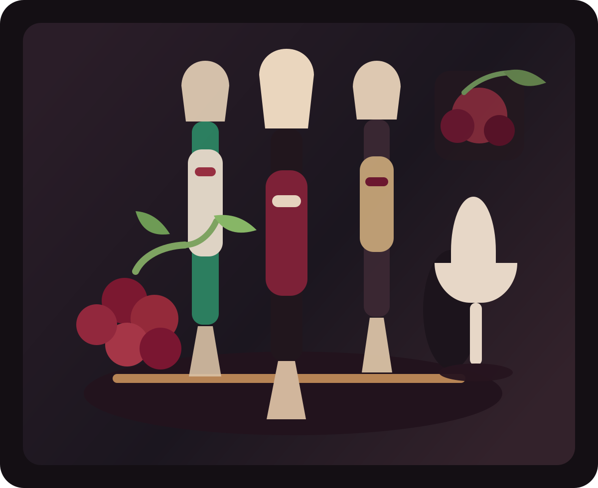
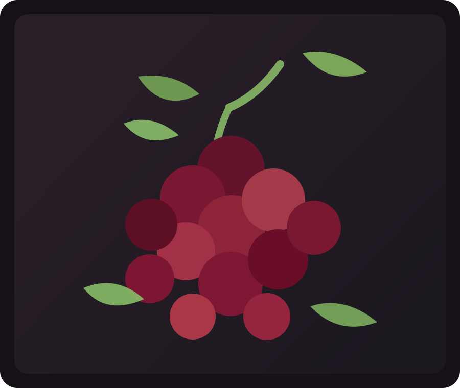
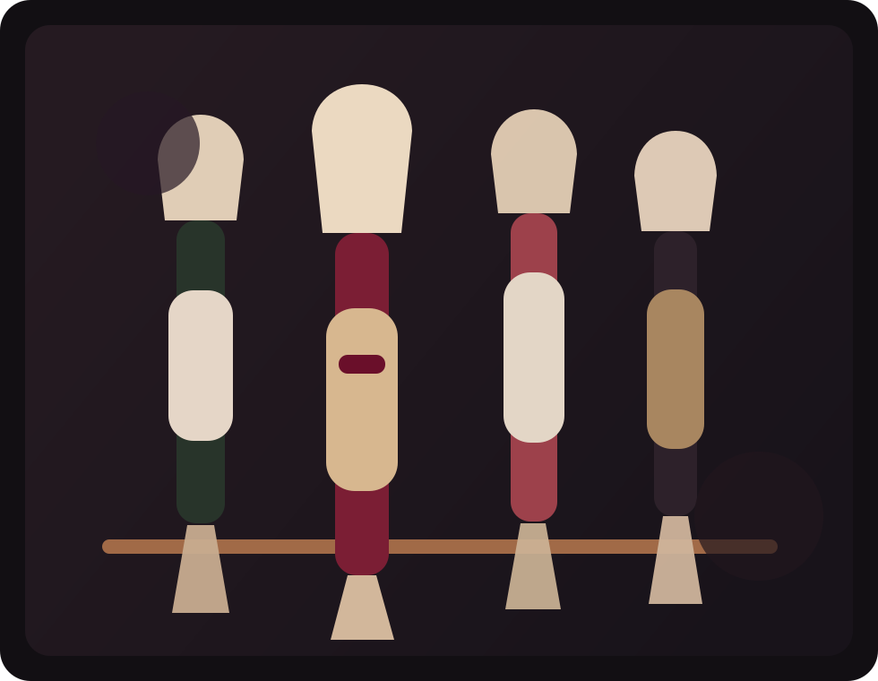

Precision wine calculators
Sharper answers for the bottles you buy, pour, store, and open
BottleMath turns wine decisions into clean numbers. Use it for en primeur landed cost, import duty, corkage, cellar economics, serving temperature, and winemaking math without opening a spreadsheet.



Browse by lane
Start with the decision you are actually making
The site is organised around real wine moments: buying, hosting, cellar planning, and production-side calculations.
Buying & Import
Cost the bottle before you commit
Model in-bond pricing, import duty, VAT, and travel allowances before the case is on your invoice.
En Primeur Landed CostHosting & Dining
Price the table, not just the bottle
Estimate wedding bottle counts, compare corkage against list prices, and understand wine markups fast.
Wedding Wine QuantityCellar & Service
Protect margin and timing
Calculate storage cost, resale net, chill timing, and decanting decisions with a collector or hospitality lens.
Cellar ROI and Resale NetWinemaking Math
Handle blend and adjustment work cleanly
Use practical calculators for Brix, sulfites, fortification, dilution, and sugar addition planning.
Blend Ratio CalculatorCalculator directory
Find a tool fast
Search by problem, not by menu structure. The search scans the card titles and descriptions below.
Showing all calculators.
En Primeur Landed Cost (UK)
Estimate duty, VAT, storage, and final per-bottle landed cost from in-bond pricing.
Open calculatorWine Import Duty (Multi-Country)
Estimate landed cost with editable customs, excise, and sales-tax assumptions.
Open calculatorDuty-Free Allowance
Check whether your carried bottles exceed destination personal allowances.
Open calculatorWedding Wine Quantity
Estimate bottle counts, case count, and rough budget by guest profile.
Open calculatorWine Calories and UK Units
Calculate calories and alcohol units per serving, total, and bottle.
Open calculatorServing Temperature + Chill Timer
Estimate target serving temperature and timing for chilling or warming.
Open calculatorDecanting Time Estimator
Estimate practical decanting time by style, vintage age, and tannin profile.
Open calculatorCorkage Break-Even
Compare BYO plus corkage against ordering directly from the restaurant wine list.
Open calculatorRestaurant Wine Markup
Estimate markup multiple, gross margin, and per-glass economics.
Open calculatorBy-the-Glass Profit
Model gross profit by bottle and weekly contribution for glass programs.
Open calculatorCellar Storage Cost
Project storage, insurance, and handling cost over time.
Open calculatorCellar ROI and Resale Net
Estimate net return after carrying costs, fees, and tax assumptions.
Open calculatorBlend Ratio Calculator
Blend two lots and estimate resulting ABV, acidity, sugar, and target-ABV ratios.
Open calculatorBrix, SG, and Potential ABV
Convert between Brix and SG and estimate potential alcohol from must readings.
Open calculatorChaptalization Sugar Addition
Estimate sugar needed to raise Brix and approximate the resulting ABV lift.
Open calculatorSulfite Addition Calculator
Estimate KMS grams and tablet equivalents for a target free SO2 increase.
Open calculatorDilution and Fortification
Estimate water or spirit additions required to hit a target ABV cleanly.
Open calculatorWhy BottleMath
A wine site that behaves more like a tool desk than a content mill
Most wine websites are built to browse. BottleMath is built to decide. The goal is to answer practical questions quickly enough that the calculator itself becomes the destination page.
- High-intent commercial tools for duties, pricing, and cellar costs.
- Consumer tools for parties, calories, and service decisions.
- Long-tail winemaking calculators that can rank for specialist queries.
Advertisement
728 x 90 ad slot
Next wave
Planned expansion
Next additions should lean into high-intent traffic: country-specific customs pages, restaurant inventory turnover tools, wine fridge sizing, and producer-focused fermentation planning calculators.